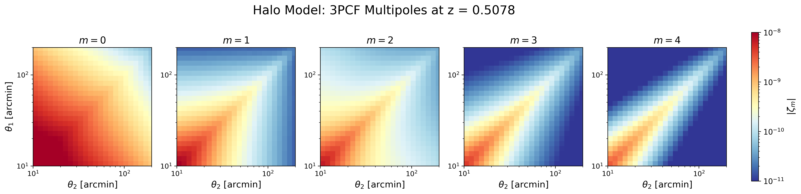
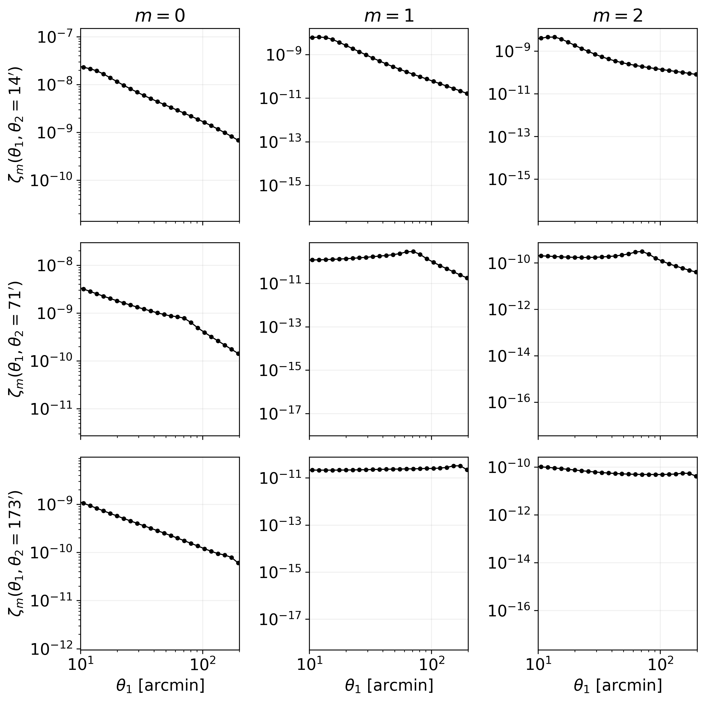
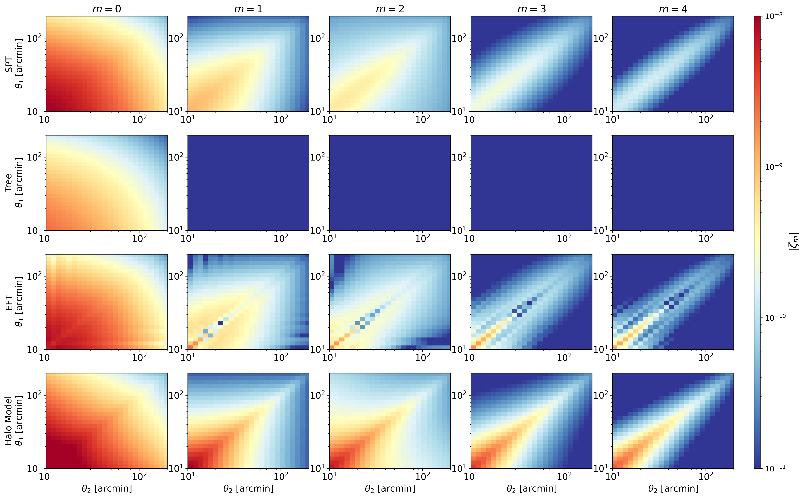

Hands on
This section provides a practical example of how to use wlcf from a Python notebook. The example follows a complete workflow:
Generate a linear matter power spectrum using CAMB.
Run
wlcfthrough the Python wrapper.Plot the resulting 3-point correlation function multipoles.
Compare different theoretical models.
The notebook associated with this tutorial can be used as a starting point for interactive runs and parameter exploration.
Setting up the working directory
First, import the required Python packages and move to the tests directory
of the repository:
import os
import numpy as np
import matplotlib.pyplot as plt
import camb
from camb import model
from wlcfpy import wlcf
WLCF_TESTS_DIR = "/path/to/wlcf/tests"
os.chdir(WLCF_TESTS_DIR)
os.makedirs("input", exist_ok=True)
os.makedirs("Output", exist_ok=True)
os.makedirs("Bell_outputs", exist_ok=True)
Generating the linear power spectrum
The linear matter power spectrum can be generated with CAMB. In this example we use a T17-like cosmology at redshift \(z = 0.5078\):
def make_camb_linear_pk(
output_file="./input/linear_pk_camb_T17_z05078.txt",
z_pk=0.5078,
h=0.7,
Omb=0.046,
Omc=0.233,
Omnu=0.0,
ns=0.97,
sigma8=0.82,
w0=-1.0,
kmin=1e-4,
kmax=50.0,
npoints=1000,
):
os.makedirs(os.path.dirname(output_file), exist_ok=True)
H0 = 100.0 * h
ombh2 = Omb * h**2
omch2 = Omc * h**2
pars = camb.CAMBparams()
# For now we assume massless neutrinos, consistent with Omnu = 0.
pars.set_cosmology(
H0=H0,
ombh2=ombh2,
omch2=omch2,
)
pars.InitPower.set_params(
ns=ns,
As=2.1e-9
)
pars.set_dark_energy(w=w0)
# Linear power spectrum at the same redshift used by wlcf/zbin
pars.set_matter_power(
redshifts=[z_pk],
kmax=kmax
)
pars.NonLinear = model.NonLinear_none
# First run to compute sigma8 for the trial As
results = camb.get_results(pars)
sigma8_current = results.get_sigma8()[0]
# Rescale As so that CAMB matches the requested sigma8
As_rescaled = 2.1e-9 * (sigma8 / sigma8_current) ** 2
pars.InitPower.set_params(
ns=ns,
As=As_rescaled
)
results = camb.get_results(pars)
kh, redshifts, pk = results.get_matter_power_spectrum(
minkh=kmin,
maxkh=kmax,
npoints=npoints,
)
pk_z = pk[0]
np.savetxt(
output_file,
np.column_stack([kh, pk_z]),
fmt="%.10e"
)
print(f"Saved linear P(k) at z={z_pk} to:")
print(output_file)
print(f"sigma8 target = {sigma8}")
print(f"sigma8 CAMB = {results.get_sigma8()[0]:.6f}")
print(f"As rescaled = {As_rescaled:.6e}")
return output_file, kh, pk_z
The resulting file is passed to wlcf through the parameter fnamePS.
Running wlcf from Python
The code can be executed directly from Python using the wlcfpy wrapper:
w = wlcf()
w.set(
numberThreads=8,
verbose=2,
verbose_log=1,
z=0.5078,
h=0.7,
sigma8=0.82,
Omb=0.046,
Omc=0.233,
Omnu=0.0,
ns=0.97,
w=-1.0,
fnamePS="./input/linear_pk_camb_T17_z05078.txt",
Wg=0,
fWgchi="./input/Wg_Takahashi_z05078.txt",
rootDir="Output",
path_Bells="Bell_outputs",
prefix="halo_model_z05078_",
tree_level=4,
zbin=0.5078,
mMax=5,
chiQuadSteps=300,
GLpoints=64,
Nell=128,
ellmax=10000,
ellmin=0.001,
writevectors=0,
chatty=2,
options=""
)
w.Run()
Here tree_level=4 selects the Takahashi/Halo-model branch.
Plotting the 3PCF multipoles
The output files zetam*.txt contain the multipoles
\(\zeta_m(\theta_1,\theta_2)\). These can be visualized as 2D maps:
import numpy as np
import matplotlib.pyplot as plt
from matplotlib.colors import LogNorm
path = "/home/sadi/LSST/test/wlcf-main/tests/Bell_outputs"
prefix = "halo_model_z05078_"
theta = np.loadtxt(f"{path}/{prefix}theta_array.txt") * 180 / np.pi * 60
Theta2, Theta1 = np.meshgrid(theta, theta)
fig = plt.figure(figsize=(19, 4))
gs = fig.add_gridspec(
nrows=1,
ncols=6,
width_ratios=[1, 1, 1, 1, 1, 0.06],
wspace=0.25
)
norm = LogNorm(vmin=1e-11, vmax=1e-8)
for m in range(5):
ax = fig.add_subplot(gs[0, m])
zeta = np.abs(np.loadtxt(f"{path}/{prefix}zetam{m}.txt"))
im = ax.pcolormesh(
Theta2,
Theta1,
zeta,
shading="auto",
cmap="RdYlBu_r",
norm=norm
)
ax.set_xscale("log")
ax.set_yscale("log")
ax.set_xlim(10, 200)
ax.set_ylim(10, 200)
ax.set_aspect("equal", adjustable="box")
ax.set_title(fr"$m={m}$", fontsize=14)
if m == 0:
ax.set_ylabel(r"$\theta_1$ [arcmin]", fontsize=13)
ax.set_xlabel(r"$\theta_2$ [arcmin]", fontsize=13)
# Colorbar outside the plots
cax = fig.add_subplot(gs[0, -1])
cbar = fig.colorbar(im, cax=cax)
cbar.set_label(r"$|\zeta_m|$", fontsize=13)
cbar.ax.tick_params(labelsize=11)
fig.suptitle(
"Halo Model: 3PCF Multipoles at z = 0.5078",
fontsize=18,
y=1.02
)
plt.savefig("halo_model_3pcf.png", dpi=300, bbox_inches="tight")
plt.show()
{kind=link}

Or we can plot
path = "/home/sadi/LSST/test/wlcf-main/tests/Bell_outputs"
prefix = "halo_model_z05078_"
theta = np.loadtxt(f"{path}/{prefix}theta_array.txt") * 180/np.pi * 60
theta2_targets = [13, 72, 169]
m_values = [0, 1, 2]
fig, axes = plt.subplots(
len(theta2_targets),
len(m_values),
figsize=(9, 9),
sharex=True
)
for i, theta2_fixed in enumerate(theta2_targets):
idx = np.argmin(np.abs(theta - theta2_fixed))
theta2_actual = theta[idx]
for j, m in enumerate(m_values):
ax = axes[i, j]
zeta = np.abs(np.loadtxt(f"{path}/{prefix}zetam{m}.txt"))
# theta2 fixed, theta1 varies
y = zeta[:, idx]
ax.plot(theta, y, color="black", marker="o", markersize=3, lw=1)
ax.set_xscale("log")
ax.set_yscale("log")
ax.set_xlim(10, 200)
if i == 0:
ax.set_title(fr"$m={m}$")
if j == 0:
ax.set_ylabel(
fr"$\zeta_m(\theta_1,\theta_2={theta2_actual:.0f}')$"
)
if i == len(theta2_targets) - 1:
ax.set_xlabel(r"$\theta_1$ [arcmin]")
ax.grid(alpha=0.2)
plt.tight_layout()
plt.savefig("halo_model_slice_3pcf.png", dpi=300, bbox_inches="tight")
plt.show()
{kind=link}

Comparing different models
We can run several theoretical models by changing
tree_level:
base_params = dict(
numberThreads=8,
verbose=2,
verbose_log=1,
# T17 / paper cosmology
z=0.5078,
h=0.7,
sigma8=0.82,
Omb=0.046,
Omc=0.233,
Omnu=0.0,
ns=0.97,
w=-1.0,
# Make sure this P(k) was generated with the same cosmology
fnamePS="./input/linear_pk_camb_T17_z05078.txt",
# Redshift bin
Wg=0,
fWgchi="./input/Wg_Takahashi_z05078.txt",
rootDir="Output",
path_Bells="Bell_outputs",
zbin=0.5078,
mMax=5,
chiQuadSteps=300,
GLpoints=64,
Nell=128,
ellmax=10000,
ellmin=0.001,
writevectors=0,
chatty=2,
options=""
)
models = {
1: "SPT",
2: "Tree",
3: "EFT",
4: "Halo_model"
}
for tree_level, model_name in models.items():
print(f"Running {model_name} model with tree_level={tree_level}")
params = base_params.copy()
params["tree_level"] = tree_level
params["prefix"] = f"{model_name.lower()}_z05078_"
w = wlcf()
w.set(params)
w.Run()
print(f"Finished {model_name}")
We plot the different cases
plt.rcParams.update({
"font.size": 14,
"axes.titlesize": 16,
"axes.labelsize": 14
})
path = "/home/sadi/LSST/test/wlcf-main/tests/Bell_outputs"
models = {
"SPT": "spt_z05078_",
"Tree": "tree_z05078_",
"EFT": "eft_z05078_",
"Halo Model": "halo_model_z05078_",
}
m_values = range(5)
theta = np.loadtxt(f"{path}/spt_z05_theta_array.txt") * 180 / np.pi * 60
Theta2, Theta1 = np.meshgrid(theta, theta)
nrows = len(models)
ncols = len(m_values)
fig = plt.figure(figsize=(20, 13))
gs = fig.add_gridspec(
nrows=nrows,
ncols=ncols + 1,
width_ratios=[1, 1, 1, 1, 1, 0.05],
wspace=0.2,
hspace=0.25
)
norm = LogNorm(vmin=1e-11, vmax=1e-8)
for i, (model_name, prefix) in enumerate(models.items()):
for j, m in enumerate(m_values):
ax = fig.add_subplot(gs[i, j])
zeta = np.abs(np.loadtxt(f"{path}/{prefix}zetam{m}.txt"))
im = ax.pcolormesh(
Theta2,
Theta1,
zeta,
shading="auto",
cmap="RdYlBu_r",
norm=norm
)
ax.set_xscale("log")
ax.set_yscale("log")
ax.set_xlim(10, 200)
ax.set_ylim(10, 200)
if i == 0:
ax.set_title(fr"$m={m}$")
if j == 0:
ax.set_ylabel(f"{model_name}\n" + r"$\theta_1$ [arcmin]")
if i == nrows - 1:
ax.set_xlabel(r"$\theta_2$ [arcmin]")
cax = fig.add_subplot(gs[:, -1])
cbar = fig.colorbar(im, cax=cax)
cbar.set_label(r"$|\zeta_m|$", fontsize=16)
cbar.ax.tick_params(labelsize=12)
plt.savefig("models_3pcf.png", dpi=300, bbox_inches="tight")
plt.show()
{kind=link}
